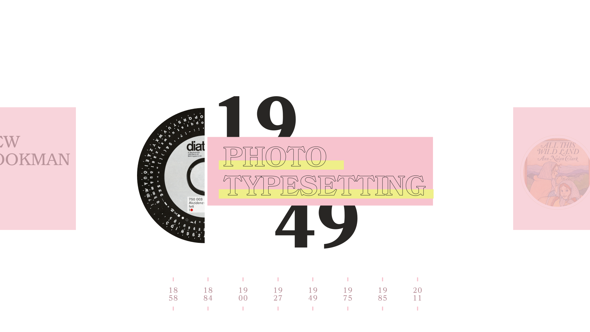
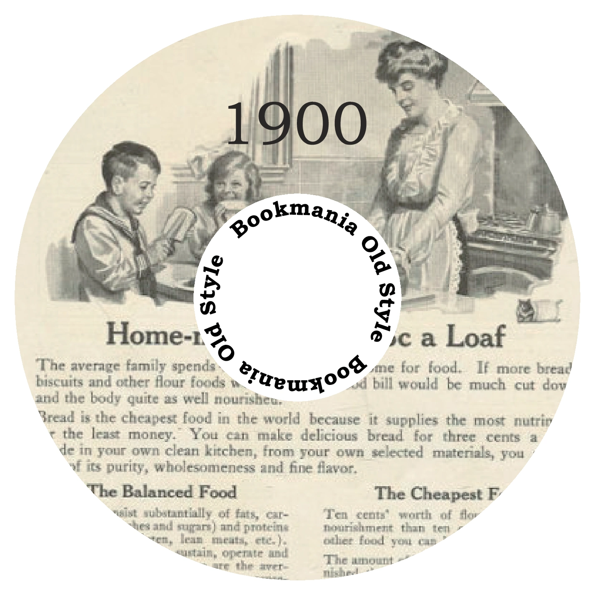
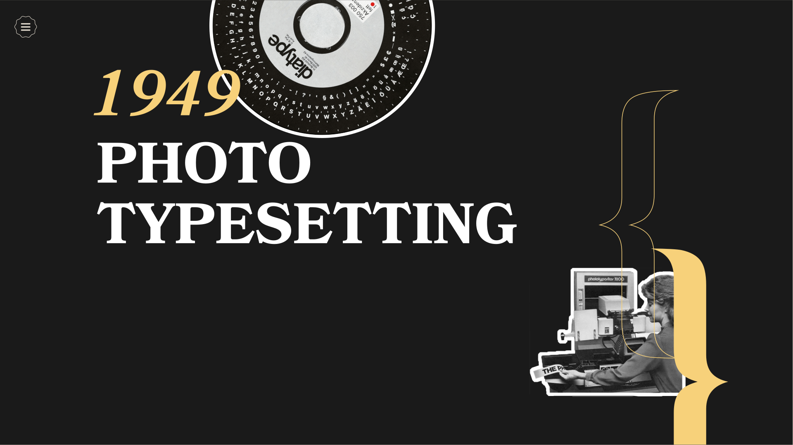
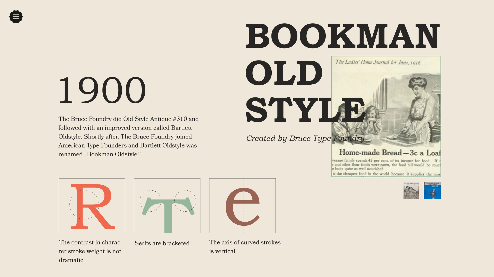
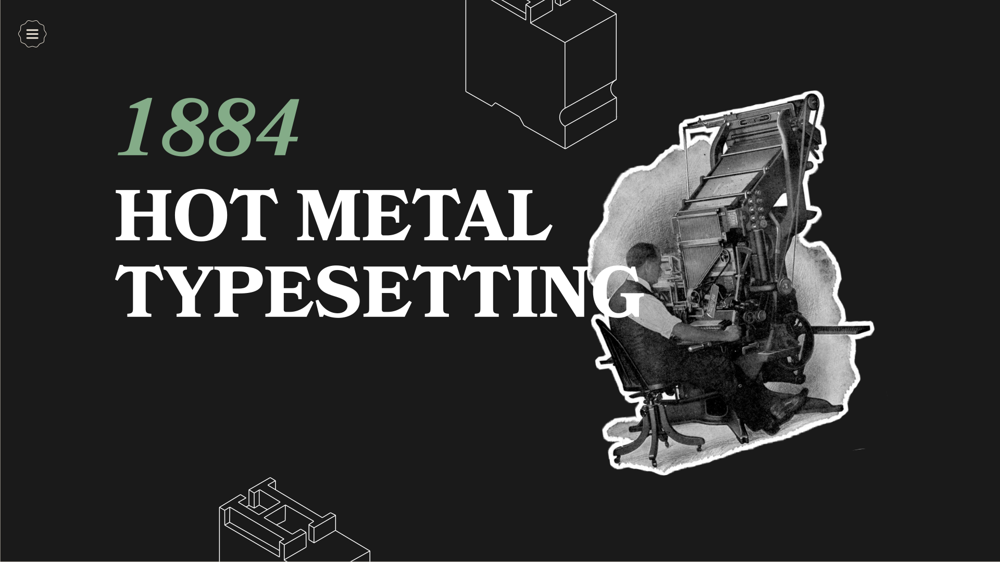

03 Selected work · Type history
Bookmania
I turned the history of Bookman into a timeline you can explore and a type specimen you can make your own.



2011 Bookmania in use
Pair your words with an image from the timeline.

1949 Photo Typesetting
Phototypesetters projected characters onto photographic paper or film.

Phototypesetting is a method of setting type. It uses photography to make columns of type on a scroll of photographic paper. The first phototypesetters quickly project light through a film negative of an individual character in a font, then through a lens that magnifies or reduces the size of the character onto photographic paper or film, which is collected on a spool in a light-proof canister.
1900 Bookman Old Style
Around the turn of the century, Bartlett Oldstyle became ATF’s Bookman Oldstyle.

1884 Hot Metal Typesetting
Metal typesetting changed how printers composed and reproduced type.

Hot metal typesetting was developed in the late nineteenth century as a development of conventional cast metal type. The technology had several advantages: it reduced labor since type sorts did not need to be slotted into position manually, and each casting created crisp new type for each printing job. In the case of Linotype machines, each line was cast as a robust continuous block which was useful for rapid newspaper printing.
1858 Antique Old Style
Alexander Phemister’s Antique Old Style was an early ancestor of Bookman.